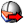

 Objects By Layer
Component Index > Human > Reference > ObjsByLayer
Get the Rhino Objects on a specified layer. - DEPRECATED - use Dynamic Pipeline
Inputs
| Name | ID | Description | Type |
|---|---|---|---|
| Refresh with Pipeline | pl | Hook up a geometry pipeline component to this input in order to listen for updates to the layer you specify. | Generic |
Outputs
| Name | ID | Description | Type |
|---|---|---|---|
| Rhino Objects | rhObj | The raw RhinoObject data harvested from the layer. | Generic |
| Object Attributes | att | The Object attributes for each object. | Generic |
Copyright © 2016 Robert McNeel & Associates.